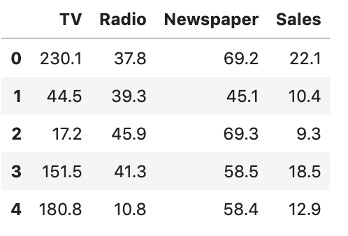

Title :¶
Exercise: Simple Multi-linear Regression
Description :¶
The aim of this exercise is to understand how to use multi regression. Here we will observe the difference in MSE for each model as the predictors change.

Data Description:¶
Instructions:¶
- Read the file
Advertisement.csvas a dataframe. - For each instance of the predictor combination, form a model. For example, if you have 2 predictors, A and B, you will end up getting 3 models - one with only A, one with only B, and one with both A and B.
- Split the data into train and test sets.
- Compute the MSE of each model.
- Print the Predictor - MSE value pair
Hints:¶
pd.read_csv(filename) Returns a pandas dataframe containing the data and labels from the file data.
sklearn.preprocessing.normalize() Scales input vectors individually to unit norm (vector length).
sklearn.model_selection.train_test_split() Splits the data into random train and test subsets.
sklearn.linear_model.LinearRegression LinearRegression fits a linear model.
sklearn.linear_model.LinearRegression.fit() Fits the linear model to the training data.
sklearn.linear_model.LinearRegression.predict() Predict using the linear model.
sklearn.metrics.mean_squared_error() Computes the mean squared error regression loss
Note: This exercise is auto-graded and you can try multiple attempts.
# Import necessary libraries
import numpy as np
import pandas as pd
import matplotlib.pyplot as plt
from sklearn import preprocessing
from prettytable import PrettyTable
from sklearn.metrics import mean_squared_error
from sklearn.linear_model import LinearRegression
from sklearn.model_selection import train_test_split
%matplotlib inline
Reading the dataset¶
# Read the file "Advertising.csv"
df = pd.read_csv("Advertising.csv")
# Take a quick look at the data to list all the predictors
df.head()
| TV | Radio | Newspaper | Sales | |
|---|---|---|---|---|
| 0 | 230.1 | 37.8 | 69.2 | 22.1 |
| 1 | 44.5 | 39.3 | 45.1 | 10.4 |
| 2 | 17.2 | 45.9 | 69.3 | 9.3 |
| 3 | 151.5 | 41.3 | 58.5 | 18.5 |
| 4 | 180.8 | 10.8 | 58.4 | 12.9 |
Create different multi predictor models¶
### edTest(test_mse) ###
# Initialize a list to store the MSE values
mse_list = []
# List of all predictor combinations to fit the curve
cols = [['TV'],['Radio'],['Newspaper'],['TV','Radio'],['TV','Newspaper'],['Radio','Newspaper'],['TV','Radio','Newspaper']]
# Loop over all the predictor combinations
for i in cols:
# Set each of the predictors from the previous list as x
x = df[i]
# Set the "Sales" column as the reponse variable
y = df["Sales"]
# Split the data into train-test sets with 80% training data and 20% testing data.
# Set random_state as 0
x_train, x_test, y_train, y_test = train_test_split(x, y, test_size=0.2, random_state=0)
# Initialize a Linear Regression model
lreg = LinearRegression()
# Fit the linear model on the train data
lreg.fit(x_train, y_train)
# Predict the response variable for the test set using the trained model
y_pred= lreg.predict(x_test)
# Compute the MSE for the test data
MSE = mean_squared_error(y_test, y_pred)
# Append the computed MSE to the list
mse_list.append(MSE)
Display the MSE with predictor combinations¶
# Helper code to display the MSE for each predictor combination
t = PrettyTable(['Predictors', 'MSE'])
for i in range(len(mse_list)):
t.add_row([cols[i],mse_list[i]])
print(t)
+------------------------------+-------------------+ | Predictors | MSE | +------------------------------+-------------------+ | ['TV'] | 10.18618193453022 | | ['Radio'] | 24.23723303713214 | | ['Newspaper'] | 32.13714634300907 | | ['TV', 'Radio'] | 4.391429763581883 | | ['TV', 'Newspaper'] | 8.687682675690592 | | ['Radio', 'Newspaper'] | 24.78339548293816 | | ['TV', 'Radio', 'Newspaper'] | 4.402118291449686 | +------------------------------+-------------------+